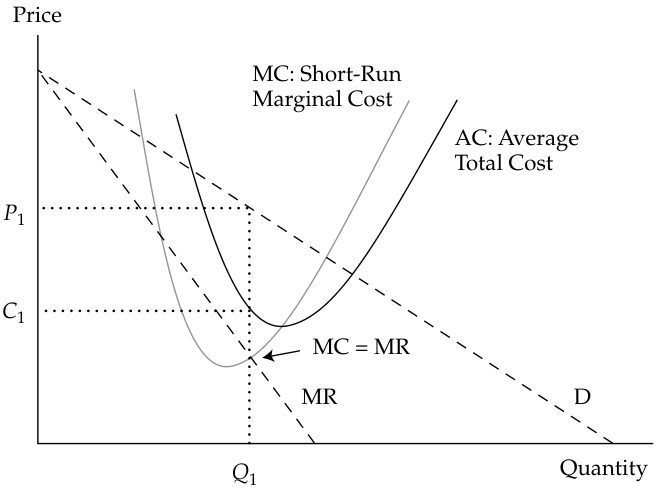
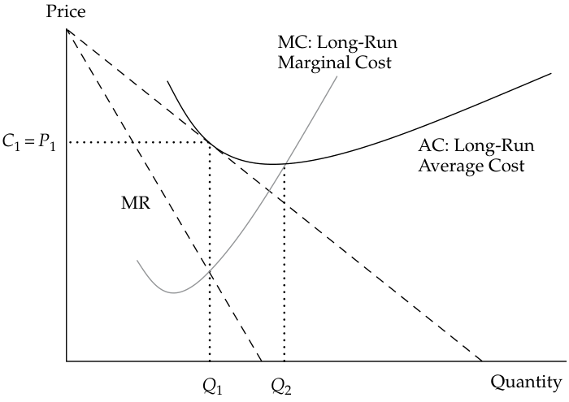

Learning Module 1 The Firm and Market Structures - Part 3: Introduction to Market Structures
Volume 2: Economics
Learning Module 1 The Firm and Market Structures
Part 3/5: Introduction to Market Structures (PDF Pages 28–36)
Tập 2: Kinh tế học (Volume 2: Economics)
Học phần 1: Doanh nghiệp và Cấu trúc Thị trường (Learning Module 1: The Firm and Market Structures)
Phần 3/5: Giới thiệu về Cấu trúc Thị trường (Introduction to Market Structures) (Trang PDF 28–36)
-
C. marginal revenue is equal to average variable costs.
-
Solution:
-
C. doanh thu cận biên bằng với chi phí biến đổi bình quân (marginal revenue is equal to average variable costs).
-
Lời giải (Solution):
A is correct. Under perfect competition, price is equal to marginal revenue. A firm breaks even when marginal revenue equals average total cost.
A là đáp án đúng. Trong điều kiện cạnh tranh hoàn hảo, giá bán bằng với doanh thu cận biên. Một doanh nghiệp hòa vốn khi doanh thu cận biên (hay giá bán) bằng với tổng chi phí bình quân (average total cost).
3
3
INTRODUCTION TO MARKET STRUCTURES
GIỚI THIỆU VỀ CẤU TRÚC THỊ TRƯỜNG (INTRODUCTION TO MARKET STRUCTURES)
describe characteristics of perfect competition, monopolistic competition, oligopoly, and pure monopoly
mô tả các đặc điểm của cạnh tranh hoàn hảo (perfect competition), cạnh tranh độc quyền (monopolistic competition), độc quyền nhóm (oligopoly), và độc quyền thuần túy (pure monopoly)
Different market structures result in different sets of choices facing a firm’s decision makers. Thus, an understanding of market structure is a powerful tool in analyzing issues, such as a firm’s pricing of its products and, more broadly, its potential to increase profitability. In the long run, a firm’s profitability will be determined by the forces associated with the market structure within which it operates. In a highly competitive market, long-run profits will be driven down by the forces of competition. In less competitive markets, large profits are possible even in the long run; in the short run, any outcome is possible. Therefore, understanding the forces behind the market structure will aid the financial analyst in determining firms’ short- and long-term prospects.
Các cấu trúc thị trường khác nhau dẫn đến các tập hợp lựa chọn khác nhau mà những người ra quyết định của doanh nghiệp phải đối mặt. Do đó, sự hiểu biết về cấu trúc thị trường là một công cụ mạnh mẽ trong việc phân tích các vấn đề như việc định giá sản phẩm của doanh nghiệp và, rộng hơn là tiềm năng gia tăng khả năng sinh lời của doanh nghiệp đó. Trong dài hạn, khả năng sinh lời của một doanh nghiệp sẽ được quyết định bởi các lực lượng gắn liền với cấu trúc thị trường mà trong đó doanh nghiệp hoạt động. Trong một thị trường có tính cạnh tranh cao, lợi nhuận dài hạn sẽ bị đẩy xuống thấp bởi các lực lượng cạnh tranh. Trong các thị trường ít cạnh tranh hơn, lợi nhuận lớn vẫn có thể đạt được ngay cả trong dài hạn; còn trong ngắn hạn, bất kỳ kết quả nào cũng có thể xảy ra. Do đó, việc hiểu rõ các lực lượng đằng sau cấu trúc thị trường sẽ hỗ trợ nhà phân tích tài chính trong việc xác định triển vọng ngắn hạn và dài hạn của các doanh nghiệp.
Market structures address questions such as the following: What determines the degree of competition associated with each market structure? Given the degree of competition associated with each market structure, what decisions are left to the management team developing corporate strategy? How does a chosen pricing and output strategy evolve into specific decisions that affect the profitability of the firm? The answers to these questions are related to the forces of the market structure within which the firm operates.
Cấu trúc thị trường giải quyết các câu hỏi như sau: Điều gì quyết định mức độ cạnh tranh gắn liền với mỗi cấu trúc thị trường? Với mức độ cạnh tranh gắn liền với từng cấu trúc thị trường, những quyết định nào còn lại dành cho đội ngũ quản lý khi xây dựng chiến lược doanh nghiệp? Làm thế nào một chiến lược định giá và sản lượng đã chọn lại phát triển thành các quyết định cụ thể làm ảnh hưởng đến khả năng sinh lời của doanh nghiệp? Câu trả lời cho những câu hỏi này có liên hệ mật thiết với các lực lượng của cấu trúc thị trường mà trong đó doanh nghiệp hoạt động.
Analysis of Market Structures
Phân tích các Cấu trúc Thị trường (Analysis of Market Structures)
Traditionally, economists classify a market into one of four structures: perfect competition, monopolistic competition, oligopoly, and monopoly.
Theo truyền thống, các nhà kinh tế học phân loại thị trường thành một trong bốn cấu trúc: cạnh tranh hoàn hảo (perfect competition), cạnh tranh độc quyền (monopolistic competition), độc quyền nhóm (oligopoly), và độc quyền (monopoly).
Economists define a market as a group of buyers and sellers that are aware of each other and can agree on a price for the exchange of goods and services. Although internet access has extended a number of markets worldwide, certain markets remain limited by geographic boundaries. For example, the internet search engine Google operates in a worldwide market. In contrast, the market for premixed cement is limited to the area within which a truck can deliver the mushy mix from the plant to a construction site before the compound becomes useless. Thomas L. Friedman’s international best seller The World Is Flat challenges the concept of the geographic limitations of the market. If the service being provided by the seller can be digitized, its market expands worldwide. For example, a technician can scan your injury in a clinic in Switzerland. That radiographic image can be digitized and sent to a radiologist in India to be read. As a customer (i.e., patient), you may never know that part of the medical service provided to you was the result of a worldwide market.
Các nhà kinh tế học định nghĩa thị trường là một nhóm người mua và người bán biết về nhau và có thể thống nhất về một mức giá để trao đổi hàng hóa và dịch vụ. Mặc dù việc truy cập internet đã mở rộng nhiều thị trường ra phạm vi toàn cầu, một số thị trường nhất định vẫn bị giới hạn bởi ranh giới địa lý. Ví dụ, công cụ tìm kiếm internet Google hoạt động trong một thị trường toàn cầu. Ngược lại, thị trường bê tông trộn sẵn bị giới hạn trong khu vực mà một chiếc xe tải có thể giao hỗn hợp bê tông ướt từ trạm trộn đến công trường xây dựng trước khi hỗn hợp đó đông cứng và trở nên vô dụng. Cuốn sách bán chạy quốc tế của Thomas L. Friedman có tựa đề Thế giới Phẳng (The World Is Flat) đã thách thức khái niệm về những giới hạn địa lý của thị trường. Nếu dịch vụ do người bán cung cấp có thể được số hóa (digitized), thị trường của nó sẽ mở rộng ra toàn cầu. Ví dụ, một kỹ thuật viên có thể chụp cắt lớp chấn thương của bạn tại một phòng khám ở Thụy Sĩ. Hình ảnh X-quang đó có thể được số hóa và gửi cho một bác sĩ chẩn đoán hình ảnh ở Ấn Độ để đọc kết quả. Với tư cách là một khách hàng (tức là bệnh nhân), bạn có thể không bao giờ biết rằng một phần dịch vụ y tế được cung cấp cho bạn là kết quả của một thị trường toàn cầu.
Some markets are highly concentrated, with the majority of total sales coming from a small number of firms. For example, in the market for internet search, three firms controlled 98.9 percent of the US market (Google 63.5 percent, Microsoft 24 percent, and Oath (formerly Yahoo!) 11.4 percent) as of January 2018. Other markets
Một số thị trường có mức độ tập trung rất cao (highly concentrated), với phần lớn tổng doanh số đến từ một số lượng nhỏ các doanh nghiệp. Ví dụ, trong thị trường tìm kiếm trên internet, ba doanh nghiệp đã kiểm soát 98,9% thị trường Hoa Kỳ (Google chiếm 63,5%, Microsoft chiếm 24%, và Oath (trước đây là Yahoo!) chiếm 11,4%) tính đến tháng 1 năm 2018. Các thị trường khác
are fragmented, such as automobile repairs, in which small independent shops often dominate and large chains may or may not exist. New products can lead to market concentration. For example, Apple introduced its first digital audio player (iPod) in 2001 and despite the entry of competitors had a world market share of more than 70 percent among digital audio players in 2009.
lại bị phân mảnh (fragmented), chẳng hạn như dịch vụ sửa chữa ô tô, nơi các cửa hàng độc lập quy mô nhỏ thường chiếm ưu thế và các chuỗi cửa hàng lớn có thể tồn tại hoặc không. Các sản phẩm mới có thể dẫn đến sự tập trung thị trường. Ví dụ, Apple đã giới thiệu máy nghe nhạc kỹ thuật số đầu tiên của mình (iPod) vào năm 2001 và bất chấp sự gia nhập của các đối thủ cạnh tranh, hãng vẫn nắm giữ thị phần toàn cầu hơn 70% trong số các máy nghe nhạc kỹ thuật số vào năm 2009.
THE IMPORTANCE OF MARKET STRUCTURE
TẦM QUAN TRỌNG CỦA CẤU TRÚC THỊ TRƯỜNG (THE IMPORTANCE OF MARKET STRUCTURE)
Consider the evolution of television broadcasting. As the market environment for television broadcasting evolved, the market structure changed, resulting in a new set of challenges and choices. In the early days, viewers had only one choice: the “free” analog channels that were broadcast over the airwaves. Most countries had one channel, owned and run by the government. In the United States, some of the more populated markets were able to receive more channels because local channels were set up to cover a market with more potential viewers. By the 1970s, new technologies made it possible to broadcast by way of cable connectivity and the choices offered to consumers began to expand rapidly. Cable television challenged the “free” broadcast channels by offering more choice and a better-quality picture. The innovation was expensive for consumers and profitable for the cable companies. By the 1990s, a new alternative began to challenge the existing broadcast and cable systems: satellite television. Satellite providers offered a further expanded set of choices, albeit at a higher price, than the free broadcast and cable alternatives. In the early 2000s, satellite television providers lowered their pricing to compete directly with the cable providers.
Hãy xem xét sự phát triển của ngành phát thanh truyền hình (television broadcasting). Khi môi trường thị trường của ngành truyền hình phát triển, cấu trúc thị trường đã thay đổi, dẫn đến một tập hợp mới các thách thức và sự lựa chọn. Trong những ngày đầu, khán giả chỉ có một lựa chọn duy nhất: các kênh truyền hình tương tự (analog channels) “miễn phí” được phát qua sóng vô tuyến. Hầu hết các quốc gia chỉ có một kênh truyền hình do chính phủ sở hữu và điều hành. Tại Hoa Kỳ, một số thị trường đông dân cư hơn có thể thu được nhiều kênh hơn bởi vì các kênh địa phương được thiết lập để phủ sóng một thị trường có nhiều khán giả tiềm năng hơn. Đến những năm 1970, các công nghệ mới đã làm cho việc phát sóng qua kết nối cáp (cable connectivity) trở nên khả thi và các lựa chọn cung cấp cho người tiêu dùng bắt đầu mở rộng nhanh chóng. Truyền hình cáp đã thách thức các kênh phát sóng quảng bá “miễn phí” bằng cách cung cấp nhiều sự lựa chọn hơn và chất lượng hình ảnh tốt hơn. Sự đổi mới này khá đắt đỏ đối với người tiêu dùng và mang lại lợi nhuận cao cho các công ty truyền hình cáp. Đến những năm 1990, một phương án thay thế mới bắt đầu thách thức các hệ thống phát sóng quảng bá và truyền hình cáp hiện có: truyền hình vệ tinh (satellite television). Các nhà cung cấp truyền hình vệ tinh đã mang đến một tập hợp lựa chọn còn mở rộng hơn nữa, mặc dù ở mức giá cao hơn so với các phương án truyền hình quảng bá miễn phí và truyền hình cáp. Vào đầu những năm 2000, các nhà cung cấp truyền hình vệ tinh đã hạ mức giá của họ xuống để cạnh tranh trực tiếp với các nhà cung cấp truyền hình cáp.
Today, cable program providers, satellite television providers, and terrestrial digital broadcasters that offer premium and pay-per-view channels compete for customers who are increasingly finding content on the internet and on their mobile devices. Companies like Netflix, Apple, and Amazon offered alternative ways for consumers to access content. Over time, these companies had moved beyond the repackaging of existing shows to developing their own content, mirroring the evolution of cable channels, such as HBO and ESPN a decade earlier.
Ngày nay, các nhà cung cấp chương trình truyền hình cáp, các nhà cung cấp truyền hình vệ tinh, và các đài truyền hình kỹ thuật số mặt đất cung cấp các kênh trả tiền cao cấp (premium) và trả tiền theo lượt xem (pay-per-view) đang phải cạnh tranh để giành giật những khách hàng vốn ngày càng tìm kiếm nội dung trên internet và trên các thiết bị di động của họ. Các công ty như Netflix, Apple, và Amazon đã cung cấp những phương thức thay thế để người tiêu dùng tiếp cận nội dung. Theo thời gian, các công ty này đã tiến xa hơn việc chỉ đóng gói lại các chương trình hiện có để tự phát triển nội dung của riêng mình, phản ánh đúng quá trình tiến hóa của các kênh truyền hình cáp như HBO và ESPN một thập kỷ trước đó.
This is a simple illustration of the importance of market structure. As the market for television broadcasting became increasingly competitive, managers have had to make decisions regarding product packaging, pricing, advertising, and marketing to survive in the changing environment. In addition, mergers and acquisitions as a response to these competitive pressures have changed the essential structure of the industry.
Đây là một minh họa đơn giản về tầm quan trọng của cấu trúc thị trường. Khi thị trường phát sóng truyền hình ngày càng trở nên cạnh tranh hơn, các nhà quản lý đã phải đưa ra những quyết định liên quan đến việc đóng gói sản phẩm, định giá, quảng cáo, và tiếp thị để tồn tại trong môi trường đang thay đổi. Thêm vào đó, các hoạt động mua bán và sáp nhập (mergers and acquisitions – M&A) như một phản ứng trước những áp lực cạnh tranh này đã làm thay đổi cấu trúc cốt lõi của ngành.
Market structure can be broken down into four distinct categories: perfect competition, monopolistic competition, oligopoly, and monopoly.
Cấu trúc thị trường có thể được chia thành bốn phân loại riêng biệt: cạnh tranh hoàn hảo (perfect competition), cạnh tranh độc quyền (monopolistic competition), độc quyền nhóm (oligopoly), và độc quyền (monopoly).
We start with the most competitive environment, perfect competition . Unlike some economic concepts, perfect competition is not merely an ideal based on assumptions. Perfect competition is a reality—for example, in several commodities markets, in which sellers and buyers have a strictly homogeneous product and no single producer is large enough to influence market prices. Perfect competition’s characteristics are well recognized and its long-run outcome is unavoidable. Profits under the conditions of perfect competition are driven to the required rate of return paid by the entrepreneur to borrow capital from investors (so-called normal profit or rental cost of capital). This does not mean that all perfectly competitive industries are doomed to extinction by a lack of profits. On the contrary, millions of businesses that do very well are living under the pressures of perfect competition.
Chúng ta bắt đầu với môi trường cạnh tranh cao nhất, cạnh tranh hoàn hảo (perfect competition). Không giống như một số khái niệm kinh tế học khác, cạnh tranh hoàn hảo không đơn thuần chỉ là một hình mẫu lý tưởng dựa trên các giả định. Cạnh tranh hoàn hảo là một thực tế — ví dụ, trong một số thị trường hàng hóa cơ bản (commodities markets), nơi người bán và người mua có một sản phẩm đồng nhất tuyệt đối (strictly homogeneous product) và không một nhà sản xuất đơn lẻ nào đủ lớn để gây ảnh hưởng lên giá thị trường. Các đặc điểm của cạnh tranh hoàn hảo được nhận diện rất rõ ràng và kết quả dài hạn của nó là điều không thể tránh khỏi. Lợi nhuận trong điều kiện cạnh tranh hoàn hảo bị đẩy về mức tỷ suất sinh lợi yêu cầu mà người chủ doanh nghiệp phải trả để vay vốn từ các nhà đầu tư (được gọi là lợi nhuận bình thường – normal profit hay chi phí thuê vốn – rental cost of capital). Điều này không có nghĩa là tất cả các ngành cạnh tranh hoàn hảo đều bị định đoạt sẽ tuyệt chủng vì thiếu lợi nhuận. Ngược lại, hàng triệu doanh nghiệp đang ăn nên làm ra vẫn đang sống dưới những áp lực của cạnh tranh hoàn hảo.
Monopolistic competition is also highly competitive; however, it is considered a form of imperfect competition. Two economists, Edward H. Chamberlin (United States) and Joan Robinson (United Kingdom), identified this hybrid market and came
Cạnh tranh độc quyền (monopolistic competition) cũng có tính cạnh tranh rất cao; tuy nhiên, nó được coi là một hình thức của cạnh tranh không hoàn hảo (imperfect competition). Hai nhà kinh tế học, Edward H. Chamberlin (Hoa Kỳ) và Joan Robinson (Vương quốc Anh), đã xác định được thị trường lai (hybrid market) này và đưa ra
up with the term because this market structure not only has strong elements of competition but also some monopoly-like conditions. The competitive characteristic is a notably large number of firms, while the monopoly aspect is the result of product differentiation. That is, if the seller can convince consumers that its product is uniquely different from other, similar products, then the seller can exercise some degree of pricing power over the market. A good example is the brand loyalty associated with soft drinks such as Coca-Cola. Many of Coca-Cola’s customers believe that their beverages are truly different from and better than all other soft drinks. The same is true for fashion creations and cosmetics.
thuật ngữ đó bởi vì cấu trúc thị trường này không chỉ có các yếu tố cạnh tranh mạnh mẽ mà còn có một số điều kiện giống như độc quyền. Đặc điểm mang tính cạnh tranh là một số lượng lớn đáng kể các doanh nghiệp, trong khi khía cạnh độc quyền là kết quả của sự khác biệt hóa sản phẩm (product differentiation). Nghĩa là, nếu người bán có thể thuyết phục người tiêu dùng rằng sản phẩm của mình khác biệt một cách độc đáo so với các sản phẩm tương tự khác, thì người bán có thể thực thi một mức độ quyền lực định giá (pricing power) nhất định đối với thị trường. Một ví dụ điển hình là lòng trung thành với thương hiệu (brand loyalty) gắn liền với các loại nước giải khát như Coca-Cola. Nhiều khách hàng của Coca-Cola tin rằng đồ uống của hãng thực sự khác biệt và ngon hơn tất cả các loại nước giải khát khác. Điều tương tự cũng đúng đối với các sáng tạo thời trang và mỹ phẩm.
The oligopoly market structure is based on a relatively small number of firms supplying the market. The small number of firms in the market means that each firm must consider what retaliatory strategies the other firms will pursue when prices and production levels change. Consider the pricing behavior of commercial airline companies. Pricing strategies and route scheduling are based on the expected reaction of the other carriers in similar markets. For any given route—say, from Paris, France, to Chennai, India—only a few carriers are in competition. If one of the carriers changes its pricing package, others likely will retaliate. Understanding the market structure of oligopoly markets can help identify a logical pattern of strategic price changes for the competing firms.
Cấu trúc thị trường độc quyền nhóm (oligopoly) dựa trên một số lượng tương đối nhỏ các doanh nghiệp cung ứng cho thị trường. Số lượng ít ỏi các doanh nghiệp trên thị trường đồng nghĩa với việc mỗi doanh nghiệp phải cân nhắc xem các doanh nghiệp khác sẽ theo đuổi những chiến lược trả đũa (retaliatory strategies) nào khi giá bán và mức sản lượng thay đổi. Hãy xem xét hành vi định giá của các hãng hàng không thương mại. Các chiến lược định giá và lập lịch trình đường bay được dựa trên phản ứng kỳ vọng của các hãng vận chuyển khác trên những thị trường tương tự. Đối với bất kỳ tuyến bay nhất định nào — chẳng hạn từ Paris, Pháp đến Chennai, Ấn Độ — chỉ có một vài hãng hàng không cạnh tranh với nhau. Nếu một trong các hãng thay đổi gói giá cước của mình, những hãng khác nhiều khả năng sẽ trả đũa. Việc hiểu rõ cấu trúc thị trường của các thị trường độc quyền nhóm có thể giúp nhận diện một khuôn mẫu hợp lý của những thay đổi giá mang tính chiến lược đối với các doanh nghiệp đang cạnh tranh.
Finally, the least competitive market structure is the monopoly . In pure monopoly markets, no other good substitutes exist for the given product or service. A single seller, which, if allowed to operate without constraint, exercises considerable power over pricing and output decisions. In most market-based economies around the globe, pure monopolies are regulated by a governmental authority. The most common example of a regulated monopoly is the local electrical power provider. In most cases, the monopoly power provider is allowed to earn a normal return on its investment and prices are set by the regulatory authority to allow that return.
Cuối cùng, cấu trúc thị trường ít cạnh tranh nhất là độc quyền (monopoly). Trong các thị trường độc quyền thuần túy (pure monopoly), không tồn tại bất kỳ hàng hóa thay thế tốt nào khác cho sản phẩm hoặc dịch vụ đang xét. Một người bán duy nhất, nếu được phép hoạt động mà không có sự ràng buộc nào, sẽ thực thi quyền lực to lớn đối với các quyết định về giá bán và sản lượng. Trong hầu hết các nền kinh tế thị trường trên toàn cầu, các nhà độc quyền thuần túy đều chịu sự quản lý của cơ quan nhà nước (regulated by a governmental authority). Ví dụ phổ biến nhất về một nhà độc quyền có sự điều tiết là nhà cung cấp điện năng tại địa phương. Trong hầu hết các trường hợp, nhà cung cấp điện độc quyền được phép kiếm một tỷ suất sinh lợi bình thường trên khoản đầu tư của mình và mức giá được cơ quan quản lý ấn định để cho phép đạt được mức sinh lợi đó.
Factors That Determine Market Structure
Các Yếu tố Quyết định Cấu trúc Thị trường (Factors That Determine Market Structure)
The following five factors determine market structure:
Năm yếu tố sau đây quyết định cấu trúc thị trường:
1. The number and relative size of firms supplying the product;
1. Số lượng và quy mô tương đối của các doanh nghiệp cung ứng sản phẩm;
2. The degree of product differentiation;
2. Mức độ khác biệt hóa sản phẩm (degree of product differentiation);
3. The power of the seller over pricing decisions;
3. Quyền lực của người bán đối với các quyết định định giá;
4. The relative strength of the barriers to market entry and exit; and
4. Sức mạnh tương đối của các rào cản gia nhập và rút lui khỏi thị trường (barriers to market entry and exit); và
5. The degree of non-price competition.
5. Mức độ cạnh tranh phi giá (degree of non-price competition).
The number and relative size of firms in a market influence market structure. When many firms exist, the degree of competition increases. With fewer firms supplying a good or service, consumers are limited in their market choices. One extreme case is the monopoly market structure, with only one firm supplying a unique good or service. Another extreme is perfect competition, with many firms supplying a similar product. Finally, an example of relative size is the automobile industry, in which a small number of large international producers (e.g., Volkswagen and Toyota) are the leaders in the global market, and a number of small companies either have market power because they are niche players (e.g., Ferrari or McLaren) or have limited market power because of their narrow range of models or limited geographical presence (e.g., Mazda or Stellantis).
Số lượng và quy mô tương đối của các doanh nghiệp trên một thị trường có ảnh hưởng đến cấu trúc thị trường. Khi có nhiều doanh nghiệp tồn tại, mức độ cạnh tranh sẽ tăng lên. Khi có ít doanh nghiệp cung ứng một hàng hóa hoặc dịch vụ hơn, người tiêu dùng bị giới hạn trong các lựa chọn trên thị trường của họ. Một trường hợp cực đoan là cấu trúc thị trường độc quyền, với chỉ một doanh nghiệp duy nhất cung ứng một hàng hóa hoặc dịch vụ độc nhất. Một thái cực khác là cạnh tranh hoàn hảo, với rất nhiều doanh nghiệp cung ứng một sản phẩm tương tự nhau. Cuối cùng, một ví dụ về quy mô tương đối là ngành công nghiệp ô tô, trong đó một số lượng nhỏ các nhà sản xuất quốc tế lớn (ví dụ: Volkswagen và Toyota) là những người dẫn đầu trên thị trường toàn cầu, và một số công ty nhỏ hoặc là có sức mạnh thị trường bởi vì họ là những người chơi trong phân khúc ngách (niche players, ví dụ: Ferrari hoặc McLaren) hoặc là có sức mạnh thị trường hạn chế do dải mẫu xe hẹp hay sự hiện diện địa lý hạn chế của họ (ví dụ: Mazda hoặc Stellantis).
In the case of monopolistic competition, many firms are providing products to the market, as with perfect competition. However, one firm’s product is differentiated in some way that makes it appear to be better than similar products from other firms. If a firm is successful in differentiating its product, this differentiation will provide pricing leverage. The more dissimilar the product appears, the more the market will
Trong trường hợp cạnh tranh độc quyền, có nhiều doanh nghiệp cùng cung cấp sản phẩm ra thị trường giống như trong cạnh tranh hoàn hảo. Tuy nhiên, sản phẩm của một doanh nghiệp được tạo sự khác biệt theo một cách thức nào đó khiến nó có vẻ tốt hơn so với các sản phẩm tương tự từ những doanh nghiệp khác. Nếu một doanh nghiệp thành công trong việc tạo sự khác biệt hóa cho sản phẩm của mình, sự khác biệt hóa này sẽ mang lại đòn bẩy định giá (pricing leverage). Sản phẩm càng có vẻ khác biệt bao nhiêu thì thị trường sẽ càng
resemble the monopoly market structure. A firm can differentiate its product through aggressive advertising campaigns; frequent styling changes; the linking of its product with other complementary products; or a host of other methods.
giống với cấu trúc thị trường độc quyền bấy nhiêu. Một doanh nghiệp có thể tạo sự khác biệt cho sản phẩm của mình thông qua các chiến dịch quảng cáo rầm rộ; thường xuyên thay đổi kiểu dáng; liên kết sản phẩm của mình với các sản phẩm bổ sung (complementary products) khác; hoặc hàng loạt các phương pháp khác.
When the market dictates the price based on aggregate supply and demand conditions, the individual firm has no control over pricing. The typical hog farmer in Nebraska and the milk producer in Bavaria are price takers . That is, they must accept whatever price the market dictates. This is the case under the market structure of perfect competition. In the case of monopolistic competition, the success of product differentiation determines the degree with which the firm can influence price. In the case of oligopoly, there are so few firms in the market that price control becomes possible. However, the small number of firms in an oligopoly market invites complex pricing strategies. Collusion, price leadership by dominant firms, and other pricing strategies can result.
Khi thị trường quyết định mức giá dựa trên điều kiện tổng cung và tổng cầu, doanh nghiệp cá lẻ không có quyền kiểm soát đối với việc định giá. Người nông dân nuôi lợn điển hình ở Nebraska và nhà sản xuất sữa ở Bavaria là những người chấp nhận giá (price takers). Nghĩa là, họ phải chấp nhận bất cứ mức giá nào mà thị trường ấn định. Đây là trường hợp diễn ra dưới cấu trúc thị trường cạnh tranh hoàn hảo. Trong trường hợp cạnh tranh độc quyền, sự thành công của việc khác biệt hóa sản phẩm quyết định mức độ mà doanh nghiệp có thể gây ảnh hưởng lên giá bán. Trong trường hợp độc quyền nhóm, có quá ít doanh nghiệp trên thị trường đến mức việc kiểm soát giá trở nên khả thi. Tuy nhiên, số lượng ít các doanh nghiệp trong thị trường độc quyền nhóm lại dẫn lối cho các chiến lược định giá phức tạp. Sự thông đồng (collusion), sự dẫn dắt giá bởi các doanh nghiệp thống lĩnh (price leadership by dominant firms), và các chiến lược định giá khác có thể xảy ra.
The degree to which one market structure can evolve into another and the difference between potential short-run outcomes and long-run equilibrium conditions depend on the strength of the barriers to entry and the possibility that firms fail to recoup their original costs or lose money for an extended period of time and therefore are forced to exit the market. Barriers to entry can result from large capital investment requirements, as in the case of petroleum refining. Barriers may also result from patents, as in the case of some electronic products and drug formulas. Another entry consideration is the possibility of high exit costs. For example, plants that are specific to a special line of products, such as aluminum smelting plants, are non-redeployable, and exit costs would be high without a liquid market for the firm’s assets. High exit costs deter entry and therefore also are considered barriers to entry. In the case of farming, the barriers to entry are low. Production of corn, soybeans, wheat, tomatoes, and other produce is an easy process to replicate; therefore, those are highly competitive markets.
Mức độ mà một cấu trúc thị trường có thể phát triển thành một cấu trúc khác cũng như sự khác biệt giữa các kết quả tiềm năng trong ngắn hạn và các điều kiện cân bằng trong dài hạn phụ thuộc vào sức mạnh của các rào cản gia nhập ngành (barriers to entry) và khả năng các doanh nghiệp không thu hồi được chi phí ban đầu hoặc thua lỗ trong một khoảng thời gian kéo dài và do đó buộc phải rời bỏ thị trường. Rào cản gia nhập có thể bắt nguồn từ các yêu cầu đầu tư vốn lớn, như trong trường hợp lọc hóa dầu. Rào cản cũng có thể bắt nguồn từ bằng sáng chế (patents), như trong trường hợp của một số sản phẩm điện tử và công thức dược phẩm. Một yếu tố cần cân nhắc khác khi gia nhập là khả năng có chi phí rút lui (exit costs) cao. Ví dụ, các nhà máy mang tính đặc thù chuyên biệt cho một dòng sản phẩm đặc biệt, chẳng hạn như các nhà máy luyện nhôm, không thể tái bố trí sang mục đích khác (non-redeployable), và chi phí rút lui sẽ rất cao nếu không có một thị trường thanh khoản cho các tài sản của doanh nghiệp. Chi phí rút lui cao làm nản lòng việc gia nhập và do đó cũng được coi là rào cản gia nhập. Trong trường hợp trồng trọt nông nghiệp, rào cản gia nhập là rất thấp. Việc sản xuất ngô, đậu tương, lúa mì, cà chua và các nông sản khác là một quy trình dễ sao chép; do đó, đó là những thị trường có tính cạnh tranh rất cao.
Non-price competition dominates those market structures in which product differentiation is critical. Therefore, monopolistic competition relies on competitive strategies that may not include pricing changes. An example of non-price competition is product differentiation through marketing. In other circumstances, non-price competition may occur because the few firms in the market feel dependent on each other. Each firm fears retaliatory price changes that would reduce total revenue for all of the firms in the market. Because oligopoly industries have so few firms, each firm feels dependent on the pricing strategies of the others. Therefore, non-price competition becomes a dominant strategy.
Cạnh tranh phi giá (non-price competition) thống lĩnh những cấu trúc thị trường mà ở đó sự khác biệt hóa sản phẩm đóng vai trò sống còn. Do đó, cạnh tranh độc quyền dựa vào các chiến lược cạnh tranh có thể không bao gồm việc thay đổi giá bán. Một ví dụ về cạnh tranh phi giá là việc tạo sự khác biệt hóa sản phẩm thông qua hoạt động tiếp thị (marketing). Trong những hoàn cảnh khác, cạnh tranh phi giá có thể xảy ra bởi vì một vài doanh nghiệp ít ỏi trên thị trường cảm thấy phụ thuộc lẫn nhau. Mỗi doanh nghiệp đều lo sợ những đợt thay đổi giá trả đũa vốn sẽ làm giảm tổng doanh thu của tất cả các doanh nghiệp trên thị trường. Bởi vì các ngành độc quyền nhóm có quá ít doanh nghiệp, mỗi doanh nghiệp đều cảm thấy phụ thuộc vào chiến lược định giá của các doanh nghiệp khác. Do đó, cạnh tranh phi giá trở thành một chiến lược chi phối (dominant strategy).
Characteristics of Market Structure
Các Đặc điểm của Cấu trúc Thị trường (Characteristics of Market Structure)
Exhibit 13: Characteristics of Market Structure
Minh họa 13: Các Đặc điểm của Cấu trúc Thị trường (Exhibit 13: Characteristics of Market Structure)
| Market Structure | Number of Sellers |
Degree of Product Differentiation |
Barriers to Entry |
Pricing Power of Firm |
Non-Price Competition |
|---|---|---|---|---|---|
| Perfect competition Monopolistic competition |
Many Many |
Homogeneous/ Standardized Differentiated |
Very Low Low |
None Some |
None Advertising and Product Differentiation |
| Oligopoly | Few | Homogeneous/ Standardized | High | Some or Considerable |
Advertising and Product Differentiation |
| Monopoly | One | Unique Product | Very High |
Considerable | Advertising |
| Cấu trúc Thị trường (Market Structure) | Số lượng Người bán (Number of Sellers) | Mức độ Khác biệt hóa Sản phẩm (Degree of Product Differentiation) | Rào cản Gia nhập (Barriers to Entry) | Quyền lực Định giá của Doanh nghiệp (Pricing Power of Firm) | Cạnh tranh Phi giá (Non-Price Competition) |
|---|---|---|---|---|---|
| Cạnh tranh hoàn hảo (Perfect competition) | Nhiều (Many) | Đồng nhất / Tiêu chuẩn hóa (Homogeneous/ Standardized) | Rất thấp (Very Low) | Không có (None) | Không có (None) |
| Cạnh tranh độc quyền (Monopolistic competition) | Nhiều (Many) | Khác biệt hóa (Differentiated) | Thấp (Low) | Một chút (Some) | Quảng cáo và Khác biệt hóa Sản phẩm (Advertising and Product Differentiation) |
| Độc quyền nhóm (Oligopoly) | Một vài (Few) | Đồng nhất / Tiêu chuẩn hóa (Homogeneous/ Standardized) | Cao (High) | Một chút hoặc Đáng kể (Some or Considerable) | Quảng cáo và Khác biệt hóa Sản phẩm (Advertising and Product Differentiation) |
| Độc quyền (Monopoly) | Một (One) | Sản phẩm Độc nhất (Unique Product) | Rất cao (Very High) | Đáng kể (Considerable) | Quảng cáo (Advertising) |
From the perspective of the owners of the firm, the most desirable market structure is that with the most control over price, because this control can lead to large profits (Exhibit 13). Monopoly and oligopoly markets offer the greatest potential control over price; monopolistic competition offers less control. Firms operating under perfectly competitive market conditions have no control over price. From the consumers’ perspective, the most desirable market structure is that with the greatest degree of competition because prices are generally lower. Thus, consumers would prefer as many goods and services as possible to be offered in competitive markets.
Từ góc độ của những người chủ sở hữu doanh nghiệp, cấu trúc thị trường đáng mong ước nhất là cấu trúc có quyền kiểm soát lớn nhất đối với giá bán, bởi vì quyền kiểm soát này có thể dẫn đến lợi nhuận lớn (Minh họa 13). Thị trường độc quyền và độc quyền nhóm mang lại tiềm năng kiểm soát giá lớn nhất; cạnh tranh độc quyền mang lại quyền kiểm soát ít hơn. Các doanh nghiệp hoạt động trong điều kiện thị trường cạnh tranh hoàn hảo không có quyền kiểm soát nào đối với giá bán. Từ góc độ của người tiêu dùng, cấu trúc thị trường đáng mong ước nhất là cấu trúc có mức độ cạnh tranh cao nhất bởi vì giá cả nhìn chung thấp hơn. Do đó, người tiêu dùng sẽ ưa thích càng nhiều hàng hóa và dịch vụ được cung ứng trong các thị trường cạnh tranh càng tốt.
As often happens in economics, there is a trade-off. While perfect competition gives the largest quantity of a good at the lowest price, other market forms may spur more innovation. Specifically, firms may incur high costs in researching a new product, and they will incur such costs only if they expect to earn an attractive return on their research investment. This is the case often made for medical innovations, for example—the cost of clinical trials and experiments to create new medicines would bankrupt perfectly competitive firms but may be acceptable in an oligopoly market structure. Therefore, consumers can benefit from less-than-perfectly-competitive markets.
Như thường thấy trong kinh tế học, luôn có một sự đánh đổi (trade-off). Trong khi cạnh tranh hoàn hảo mang lại số lượng hàng hóa lớn nhất với mức giá thấp nhất, các hình thái thị trường khác lại có thể thúc đẩy nhiều sự đổi mới sáng tạo (innovation) hơn. Cụ thể, các doanh nghiệp có thể phải chịu chi phí cao khi nghiên cứu một sản phẩm mới, và họ sẽ chỉ gánh chịu những chi phí như vậy nếu họ kỳ vọng kiếm được một tỷ suất sinh lợi hấp dẫn trên khoản đầu tư nghiên cứu của mình. Đây là lập luận thường được đưa ra đối với các đổi mới y học, chẳng hạn — chi phí thử nghiệm lâm sàng và thí nghiệm để tạo ra các loại thuốc mới sẽ làm phá sản các doanh nghiệp cạnh tranh hoàn hảo nhưng lại có thể chấp nhận được trong một cấu trúc thị trường độc quyền nhóm. Do đó, người tiêu dùng có thể được hưởng lợi từ những thị trường kém cạnh tranh hoàn hảo hơn.
PORTER’S FIVE FORCES AND MARKET STRUCTURE
NĂM ÁP LỰC CẠNH TRANH CỦA PORTER VÀ CẤU TRÚC THỊ TRƯỜNG (PORTER’S FIVE FORCES AND MARKET STRUCTURE)
A financial analyst aiming to establish market conditions and consequent profitability of incumbent firms should start with the questions posed earlier: How many sellers are there? Is the product differentiated? Moreover, in the case of monopolies and quasi-monopolies, the analyst should evaluate the legislative and regulatory framework: Can the company set prices freely, or are there governmental controls? Finally, the analyst should consider the threat of competition from potential entrants.
Một nhà phân tích tài chính hướng tới việc xác lập các điều kiện thị trường và khả năng sinh lời kéo theo của các doanh nghiệp hiện hữu (incumbent firms) nên bắt đầu bằng những câu hỏi đã đặt ra trước đó: Có bao nhiêu người bán? Sản phẩm có được khác biệt hóa hay không? Hơn nữa, trong trường hợp độc quyền và bán độc quyền (quasi-monopolies), nhà phân tích nên đánh giá khung pháp lý và quy định quản lý: Công ty có thể tự do ấn định giá bán hay có sự kiểm soát của chính phủ? Cuối cùng, nhà phân tích nên xem xét mối đe dọa cạnh tranh từ những doanh nghiệp tiềm năng mới gia nhập ngành.
This analysis is often summarized by students of corporate strategy as “Porter’s five forces,” named after Harvard Business School professor Michael E. Porter. His book, Competitive Strategy , presented a systematic analysis of the practice of market strategy. Porter identified the five forces as follows:
Phân tích này thường được các sinh viên ngành chiến lược doanh nghiệp tóm tắt là “năm áp lực cạnh tranh của Porter” (Porter’s five forces), được đặt theo tên của giáo sư Trường Kinh doanh Harvard Michael E. Porter. Cuốn sách của ông, Chiến lược Cạnh tranh (Competitive Strategy), đã trình bày một phân tích có hệ thống về thực tiễn chiến lược thị trường. Porter đã xác định năm áp lực cạnh tranh như sau:
-
Threat of entry;
-
Power of suppliers;
-
Power of buyers (customers);
-
Threat of substitutes; and
-
Rivalry among existing competitors.
-
Mối đe dọa từ các đối thủ mới gia nhập (Threat of entry);
-
Quyền lực đàm phán của nhà cung cấp (Power of suppliers);
-
Quyền lực đàm phán của người mua / khách hàng (Power of buyers/customers);
-
Mối đe dọa từ các sản phẩm thay thế (Threat of substitutes); và
-
Sự cạnh tranh giữa các đối thủ hiện hữu trong ngành (Rivalry among existing competitors).
It is easy to note the parallels between four of these five forces and the questions posed earlier. The only “orphan” is the power of suppliers, which is not at the core of the theoretical economic analysis of competition, but which has substantial weight in the practical analysis of competition and profitability.
Rất dễ nhận thấy sự tương đồng giữa bốn trong số năm áp lực này với những câu hỏi đã được đặt ra ở phần trước. Yếu tố “đơn lẻ” duy nhất là quyền lực của nhà cung cấp – yếu tố không nằm ở trọng tâm của phân tích kinh tế lý thuyết về cạnh tranh, nhưng lại có sức nặng đáng kể trong phân tích thực tiễn về cạnh tranh và khả năng sinh lời.
Some stock analysts use the term “economic moat” to suggest that some of the factors protecting the profitability of a firm are similar to the moats (ditches full of water) that were used to protect some medieval castles. A deep moat means that there is little or no threat of entry by invaders (i.e., competitors). It also means that customers are locked in because of high switching costs.
Một số nhà phân tích cổ phiếu sử dụng thuật ngữ “con hào kinh tế” (economic moat) để gợi ý rằng một số yếu tố bảo vệ khả năng sinh lời của doanh nghiệp cũng tương tự như những con hào (rãnh sâu chứa đầy nước) từng được sử dụng để bảo vệ các lâu đài thời trung cổ. Một con hào sâu có nghĩa là có rất ít hoặc không có mối đe dọa xâm nhập từ những kẻ tấn công (tức là các đối thủ cạnh tranh). Nó cũng có nghĩa là khách hàng bị giữ chân chặt chẽ do chi phí chuyển đổi (switching costs) cao.
| QUESTION SET |
|---|
| 1. A market structure characterized by many sellers with each having some pricing power and product differentiation is_best_described as: |
| A.oligopoly. |
| B.perfect competition. |
| C.monopolistic competition. Solution: |
| C is correct. Monopolistic competition is characterized by many sellers, differentiated products, and some pricing power. |
| 2. A market structure with relatively few sellers of a homogeneous or stan- dardized product is_best_described as: |
| A.oligopoly. |
| B.monopoly. |
| C.perfect competition. Solution: |
| A is correct. Few sellers of a homogeneous or standardized product charac- terizes an oligopoly. |
| BỘ CÂU HỎI (QUESTION SET) |
|---|
| 1. Một cấu trúc thị trường được đặc trưng bởi nhiều người bán, trong đó mỗi người bán có một số quyền lực định giá và sự khác biệt hóa sản phẩm được mô tả đúng nhất là: |
| A. độc quyền nhóm (oligopoly). |
| B. cạnh tranh hoàn hảo (perfect competition). |
| C. cạnh tranh độc quyền (monopolistic competition). Lời giải (Solution): |
| C là đáp án đúng. Cạnh tranh độc quyền được đặc trưng bởi nhiều người bán, các sản phẩm có sự khác biệt hóa, và có một số quyền lực định giá. |
| 2. Một cấu trúc thị trường có tương đối ít người bán một sản phẩm đồng nhất hoặc được tiêu chuẩn hóa được mô tả đúng nhất là: |
| A. độc quyền nhóm (oligopoly). |
| B. độc quyền (monopoly). |
| C. cạnh tranh hoàn hảo (perfect competition). Lời giải (Solution): |
| A là đáp án đúng. Có ít người bán một sản phẩm đồng nhất hoặc được tiêu chuẩn hóa là đặc trưng của cấu trúc thị trường độc quyền nhóm. |
MONOPOLISTIC COMPETITION
CẠNH TRANH ĐỘC QUYỀN (MONOPOLISTIC COMPETITION)
4
4
explain supply and demand relationships under monopolistic competition, including the optimal price and output for firms as well as pricing strategy
giải thích mối quan hệ cung và cầu trong điều kiện cạnh tranh độc quyền, bao gồm mức giá và sản lượng tối ưu cho doanh nghiệp cũng như chiến lược định giá (pricing strategy)
Many market structures exhibit characteristics of strong competitive forces; however, other distinct non-competitive factors can also play important roles in the market. As the name implies, monopolistic competition is a hybrid market. The most distinctive factor in monopolistic competition is product differentiation . Recall the characteristics outlined earlier:
Nhiều cấu trúc thị trường thể hiện các đặc điểm của những lực lượng cạnh tranh mạnh mẽ; tuy nhiên, các yếu tố phi cạnh tranh riêng biệt khác cũng có thể đóng vai trò quan trọng trên thị trường. Đúng như tên gọi của nó, cạnh tranh độc quyền (monopolistic competition) là một thị trường lai (hybrid market). Yếu tố đặc trưng nổi bật nhất trong cạnh tranh độc quyền là sự khác biệt hóa sản phẩm (product differentiation). Hãy nhớ lại các đặc điểm đã được phác thảo ở phần trước:
1. The market has a large number of potential buyers and sellers.
1. Thị trường có một số lượng lớn người mua và người bán tiềm năng.
2. The products offered by each seller are close substitutes for the products offered by other firms, and each firm tries to make its product look different.
2. Các sản phẩm do mỗi người bán cung cấp là những hàng hóa thay thế gần gũi (close substitutes) cho các sản phẩm do những doanh nghiệp khác cung cấp, và mỗi doanh nghiệp đều cố gắng làm cho sản phẩm của mình trông khác biệt.
3. Entry into and exit from the market are possible with fairly low costs.
3. Việc gia nhập và rút lui khỏi thị trường là khả thi với chi phí khá thấp.
4. Firms have some pricing power.
4. Các doanh nghiệp có một số quyền lực định giá (some pricing power).
5. Suppliers differentiate their products through advertising and other nonprice strategies.
5. Các nhà cung cấp tạo sự khác biệt hóa cho sản phẩm của mình thông qua quảng cáo và các chiến lược phi giá khác.
While the market is made up of many firms that compose the product group, each producer attempts to distinguish its product from that of the others. Product differentiation is accomplished in a variety of ways. For example, consider the wide variety of communication devices available today. Decades ago, when each communication
Mặc dù thị trường được tạo thành từ nhiều doanh nghiệp cùng cấu thành nên nhóm sản phẩm, mỗi nhà sản xuất đều cố gắng phân biệt sản phẩm của mình với sản phẩm của những nhà sản xuất khác. Sự khác biệt hóa sản phẩm được thực hiện theo nhiều cách đa dạng. Ví dụ, hãy xem xét sự đa dạng phong phú của các thiết bị liên lạc hiện có ngày nay. Hàng thập kỷ trước, khi mỗi thị trường
market was controlled by a regulated single seller (the telephone company), all telephones were alike. In today’s deregulated market, the variety of physical styles and colors is extensive. All versions accomplish many of the same tasks.
liên lạc đều bị kiểm soát bởi một người bán duy nhất chịu sự điều tiết (công ty điện thoại), tất cả những chiếc điện thoại đều giống hệt nhau. Trong thị trường đã được phi điều tiết (deregulated market) ngày nay, sự đa dạng về kiểu dáng vật lý và màu sắc là vô cùng phong phú. Tất cả các phiên bản đều thực hiện nhiều tác vụ giống nhau.
The communication device manufacturers and providers differentiate their products with different colors, styles, networks, bundled applications, conditional contracts, functionality, and more. Advertising is usually the avenue pursued to convince consumers that the goods in the product group are different. Successful advertising and trademark branding result in customer loyalty. A good example is the brand loyalty associated with Harley-Davidson motorcycles. Harley-Davidson’s customers believe that their motorcycles are truly different from and better than all other motorcycles.
Các nhà sản xuất và nhà cung cấp thiết bị liên lạc tạo sự khác biệt cho sản phẩm của họ bằng các màu sắc, kiểu dáng, mạng lưới, ứng dụng đi kèm (bundled applications), hợp đồng có điều kiện, tính năng khác nhau, và nhiều yếu tố khác nữa. Quảng cáo thường là con đường được theo đuổi để thuyết phục người tiêu dùng rằng các hàng hóa trong nhóm sản phẩm là khác nhau. Việc quảng cáo và xây dựng thương hiệu nhãn hiệu (trademark branding) thành công sẽ dẫn đến lòng trung thành của khách hàng (customer loyalty). Một ví dụ điển hình là lòng trung thành với thương hiệu gắn liền với những chiếc mô tô Harley-Davidson. Khách hàng của Harley-Davidson tin rằng những chiếc mô tô của hãng thực sự khác biệt và tốt hơn tất cả các loại mô tô khác.
The extent to which the producer is successful in product differentiation determines pricing power in the market. Very successful differentiation results in a market structure that resembles the single-seller market (monopoly). Because of relatively low entry and exit costs, competition will, in the long run, drive prices and revenues down toward an equilibrium similar to perfect competition. Thus, the hybrid market displays characteristics found in both perfectly competitive and monopoly markets.
Mức độ thành công của nhà sản xuất trong việc khác biệt hóa sản phẩm sẽ quyết định quyền lực định giá trên thị trường. Sự khác biệt hóa rất thành công sẽ dẫn đến một cấu trúc thị trường giống với thị trường một người bán duy nhất (độc quyền). Do chi phí gia nhập và rút lui tương đối thấp, sự cạnh tranh trong dài hạn sẽ đẩy giá cả và doanh thu giảm xuống hướng tới một trạng thái cân bằng tương tự như cạnh tranh hoàn hảo. Như vậy, thị trường lai này thể hiện các đặc điểm được tìm thấy trong cả thị trường cạnh tranh hoàn hảo lẫn thị trường độc quyền.
Demand Analysis in Monopolistically Competitive Markets
Phân tích Cầu trong Thị trường Cạnh tranh Độc quyền (Demand Analysis in Monopolistically Competitive Markets)
Because each good sold in the product group is somewhat different from the others, the demand curve for each firm in the monopolistic competition market structure is downward sloping to the right. Price and the quantity demanded are negatively related. Lowering the price will increase the quantity demanded and raising the price will decrease the quantity demanded. There will be ranges of prices within which demand is elastic and (lower) prices at which demand is inelastic. Exhibit 14 illustrates the demand, marginal revenue, and cost structures facing a monopolistically competitive firm in the short run.
Bởi vì mỗi hàng hóa được bán trong nhóm sản phẩm có phần khác biệt so với những hàng hóa khác, đường cầu đối với mỗi doanh nghiệp trong cấu trúc thị trường cạnh tranh độc quyền đều dốc xuống về phía bên phải. Giá bán và lượng cầu có mối quan hệ nghịch biến (negatively related). Việc hạ giá sẽ làm tăng lượng cầu và việc tăng giá sẽ làm giảm lượng cầu. Sẽ có những khoảng giá mà trong đó cầu là co giãn (elastic) và những mức giá (thấp hơn) mà tại đó cầu là không co giãn (inelastic). Minh họa 14 minh họa cấu trúc cầu, doanh thu cận biên, và chi phí mà một doanh nghiệp cạnh tranh độc quyền phải đối mặt trong ngắn hạn.
Exhibit 14: Short-Run Equilibrium in Monopolistic Competition
Minh họa 14: Trạng thái Cân bằng Ngắn hạn trong Cạnh tranh Độc quyền (Exhibit 14: Short-Run Equilibrium in Monopolistic Competition)

Chú thích hình ảnh: Trục tung là Giá (Price), trục hoành là Sản lượng (Quantity). Đường chi phí cận biên ngắn hạn (MC: Short-Run Marginal Cost) cắt đường doanh thu cận biên (MR) tại mức sản lượng $Q_1$ ($\text{MC} = \text{MR}$). Gióng lên đường cầu (D) xác định giá bán $P_1$, và gióng lên đường tổng chi phí bình quân (AC: Average Total Cost) xác định chi phí bình quân $C_1$ (với $P_1 > C_1$).
In the short run, the profit-maximizing choice is the level of output at which MR = MC. Because the product is somewhat different from that of the competitors, the firm can charge the price determined by the demand curve. Therefore, in Exhibit 14, Q 1 is the ideal level of output and P 1 is the price consumers are willing to pay to acquire that quantity. Total revenue is the area of the rectangle P 1 × Q 1.
Trong ngắn hạn, lựa chọn tối đa hóa lợi nhuận là mức sản lượng đầu ra mà tại đó $\text{MR} = \text{MC}$. Bởi vì sản phẩm có phần khác biệt so với sản phẩm của các đối thủ cạnh tranh, doanh nghiệp có thể ấn định mức giá được xác định bởi đường cầu. Do đó, trong Minh họa 14, $Q_1$ là mức sản lượng lý tưởng và $P_1$ là mức giá mà người tiêu dùng sẵn lòng chi trả để mua mức sản lượng đó. Tổng doanh thu là diện tích của hình chữ nhật $P_1 \times Q_1$.
Supply Analysis in Monopolistically Competitive Markets
Phân tích Cung trong Thị trường Cạnh tranh Độc quyền (Supply Analysis in Monopolistically Competitive Markets)
In perfect competition, the firm’s supply schedule is represented by the marginal cost schedule. In monopolistic competition, there is no well-defined supply function. The information used to determine the appropriate level of output is based on the intersection of MC and MR. However, the price that will be charged is based on the market demand schedule. The firm’s supply curve should measure the quantity the firm is willing to supply at various prices. That information is not represented by either marginal cost or average cost.
Trong cạnh tranh hoàn hảo, biểu cung (supply schedule) của doanh nghiệp được đại diện bởi biểu chi phí cận biên (marginal cost schedule). Trong cạnh tranh độc quyền, không có một hàm cung được xác định rõ ràng (no well-defined supply function). Thông tin được sử dụng để xác định mức sản lượng đầu ra phù hợp dựa trên giao điểm của MC và MR. Tuy nhiên, mức giá sẽ được ấn định lại dựa trên biểu cầu thị trường (market demand schedule). Đường cung của doanh nghiệp lẽ ra phải đo lường mức sản lượng mà doanh nghiệp sẵn lòng cung ứng tại các mức giá khác nhau. Thông tin đó không được đại diện bởi chi phí cận biên hay chi phí bình quân.
Optimal Price and Output in Monopolistically Competitive Markets
Mức Giá và Sản lượng Tối ưu trong Thị trường Cạnh tranh Độc quyền (Optimal Price and Output in Monopolistically Competitive Markets)
In the short run, the profit-maximizing choice is the level of output at which MR = MC and total revenue is the area of the rectangle P 1 × Q 1 shown in Exhibit 14.
Trong ngắn hạn, lựa chọn tối đa hóa lợi nhuận là mức sản lượng đầu ra mà tại đó $\text{MR} = \text{MC}$ và tổng doanh thu là diện tích của hình chữ nhật $P_1 \times Q_1$ được thể hiện trong Minh họa 14.
The average cost of producing Q 1 units of the product is C 1, and the total cost is the area of the rectangle C 1 × Q 1. The difference between TR and TC is economic profit. The profit relationship is described as follows:
Chi phí bình quân để sản xuất $Q_1$ đơn vị sản phẩm là $C_1$, và tổng chi phí là diện tích của hình chữ nhật $C_1 \times Q_1$. Phần chênh lệch giữa TR và TC là lợi nhuận kinh tế (economic profit). Mối quan hệ lợi nhuận được mô tả như sau:
π = TR – TC,
where π is total profit, TR is total revenue, and TC is total cost.
trong đó $\pi$ là tổng lợi nhuận, $\text{TR}$ là tổng doanh thu, và $\text{TC}$ là tổng chi phí.
THE BENEFITS OF IMPERFECT COMPETITION
NHỮNG LỢI ÍCH CỦA CẠNH TRANH KHÔNG HOÀN HẢO (THE BENEFITS OF IMPERFECT COMPETITION)
Is monopolistic competition indeed imperfect—that is, is it a bad thing? At first, one would say that it is an inefficient market structure because prices are higher and the quantity supplied is less than in perfect competition. At the same time, in the real world, we see more markets characterized by monopolistic competition than markets meeting the strict conditions of perfect competition. If monopolistic competition were that inefficient, one wonders, why would it be so common?
Liệu cạnh tranh độc quyền có thực sự là không hoàn hảo — nghĩa là, liệu nó có phải là một điều tồi tệ hay không? Thoạt nhìn, người ta sẽ nói rằng đó là một cấu trúc thị trường kém hiệu quả bởi vì giá bán cao hơn và sản lượng cung ứng ít hơn so với trong cạnh tranh hoàn hảo. Đồng thời, trong thế giới thực, chúng ta thấy có nhiều thị trường mang đặc điểm của cạnh tranh độc quyền hơn là các thị trường đáp ứng những điều kiện nghiêm ngặt của cạnh tranh hoàn hảo. Người ta tự hỏi, nếu cạnh tranh độc quyền kém hiệu quả đến vậy, tại sao nó lại phổ biến đến thế?
A part of the explanation goes back to Schumpeter. Firms try to differentiate their products to meet the needs of customers. Differentiation provides a profit incentive to innovate, experiment with new products and services, and potentially improve the standard of living.
Một phần của lời giải thích quay trở lại với lý thuyết của Schumpeter. Các doanh nghiệp cố gắng tạo sự khác biệt hóa cho sản phẩm của mình nhằm đáp ứng nhu cầu của khách hàng. Sự khác biệt hóa mang lại động lực lợi nhuận (profit incentive) để đổi mới sáng tạo, thử nghiệm các sản phẩm và dịch vụ mới, và có tiềm năng nâng cao mức sống.
Moreover, because each customer has differing tastes and preferences, slight variations of each good or service are likely to capture the niche of the market that prefers them. An example is the market for candy, where one can find chocolate, licorice, mint, fruit, and many other flavors.
Hơn nữa, bởi vì mỗi khách hàng có thị hiếu và sở thích khác nhau, những biến thể nhỏ của mỗi hàng hóa hoặc dịch vụ có nhiều khả năng sẽ chiếm lĩnh được phân khúc ngách (niche) của thị trường ưa chuộng chúng. Một ví dụ là thị trường kẹo ngọt, nơi người ta có thể tìm thấy hương sô-cô-la, cam thảo, bạc hà, trái cây, và vô số hương vị khác.
Another reason why monopolistic competition may be good is that people like variety. Traditional economic theories of international trade suggested that countries should buy products from other countries that they cannot produce domestically. Therefore, Norway should buy bananas from a tropical country and sell crude oil in exchange. But this is not the only kind of exchange that happens in reality: For example, Germany imports Honda, Subaru, and Toyota cars from Japan and sells Volkswagen, Porsche, Mercedes, and BMW cars to Japan. In theory, this should not occur because each of the countries produces good cars domestically and does not need to import them. The truth, however, is that consumers in both countries enjoy variety. Some Japanese drivers prefer to be at the steering wheel of a BMW; others like Hondas, and the same happens in Germany. Variety and product differentiation, therefore, are not necessarily bad things.
Một lý do khác giải thích tại sao cạnh tranh độc quyền có thể là điều tốt nằm ở việc con người yêu thích sự đa dạng (variety). Các lý thuyết kinh tế truyền thống về thương mại quốc tế cho rằng các quốc gia nên mua những sản phẩm từ các quốc gia khác mà họ không thể tự sản xuất trong nước. Do đó, Na Uy nên mua chuối từ một quốc gia nhiệt đới và bán dầu thô để trao đổi. Nhưng đây không phải là kiểu trao đổi duy nhất diễn ra trong thực tế: Ví dụ, Đức nhập khẩu xe ô tô Honda, Subaru, và Toyota từ Nhật Bản và bán xe Volkswagen, Porsche, Mercedes, và BMW sang Nhật Bản. Về mặt lý thuyết, điều này lẽ ra không nên xảy ra bởi vì mỗi quốc gia đều tự sản xuất được những chiếc xe ô tô tốt ở trong nước và không cần phải nhập khẩu chúng. Tuy nhiên, sự thật là người tiêu dùng ở cả hai quốc gia đều yêu thích sự đa dạng. Một số tài xế Nhật Bản thích ngồi sau tay lái của một chiếc BMW; những người khác lại thích xe Honda, và điều tương tự cũng diễn ra ở Đức. Do đó, sự đa dạng và khác biệt hóa sản phẩm không nhất thiết là những điều tồi tệ.
Long-Run Equilibrium in Monopolistic Competition
Trạng thái Cân bằng Dài hạn trong Cạnh tranh Độc quyền (Long-Run Equilibrium in Monopolistic Competition)
Because total cost includes all costs associated with production, including opportunity cost, economic profit is a signal to the market, and that signal will attract more competition. Just as with the perfectly competitive market structure, with relatively low entry costs, more firms will enter the market and lure some customers away from the firm making an economic profit. The loss of customers to new entrant firms will drive down the demand for all firms producing similar products. In the long run for the monopolistically competitive firm, economic profit will fall to zero. Exhibit 15 illustrates the condition of long-run equilibrium for monopolistic competition.
Bởi vì tổng chi phí đã bao gồm tất cả các chi phí gắn liền với hoạt động sản xuất, kể cả chi phí cơ hội, nên lợi nhuận kinh tế là một tín hiệu gửi tới thị trường, và tín hiệu đó sẽ thu hút thêm nhiều sự cạnh tranh hơn. Cũng giống như đối với cấu trúc thị trường cạnh tranh hoàn hảo, với chi phí gia nhập tương đối thấp, nhiều doanh nghiệp hơn sẽ gia nhập thị trường và thu hút một số khách hàng rời bỏ doanh nghiệp đang tạo ra lợi nhuận kinh tế. Việc mất khách hàng vào tay các doanh nghiệp mới gia nhập sẽ đẩy nhu cầu đối với tất cả các doanh nghiệp sản xuất sản phẩm tương tự giảm xuống. Trong dài hạn đối với doanh nghiệp cạnh tranh độc quyền, lợi nhuận kinh tế sẽ giảm xuống bằng không. Minh họa 15 minh họa điều kiện cân bằng dài hạn đối với cạnh tranh độc quyền.
Exhibit 15: Long-Run Equilibrium in Monopolistic Competition
Minh họa 15: Trạng thái Cân bằng Dài hạn trong Cạnh tranh Độc quyền (Exhibit 15: Long-Run Equilibrium in Monopolistic Competition)

Chú thích hình ảnh: Trục tung là Giá (Price), trục hoành là Sản lượng (Quantity). Tại mức sản lượng $Q_1$ nơi đường chi phí cận biên dài hạn (MC: Long-Run Marginal Cost) cắt đường doanh thu cận biên (MR), đường cầu tiếp xúc với đường chi phí bình quân dài hạn (AC: Long-Run Average Cost) tại mức giá $C_1 = P_1$. Mức sản lượng $Q_1$ nằm bên trái mức sản lượng $Q_2$ (điểm cực tiểu của đường AC).
In long-run equilibrium, output is still optimal at the level at which MR = MC, which is Q 1 in Exhibit 15. Again, the price consumers are willing to pay for any amount of the product is determined from the demand curve. That price is P 1 for the quantity Q 1 in Exhibit 15, and total revenue is the area of the rectangle P 1 × Q 1. Notice that unlike long-run equilibrium in perfect competition, in the market of monopolistic competition, the equilibrium position is at a higher level of average cost than the level of output that minimizes average cost. Average cost does not reach its minimum until output level Q 2 is achieved. Total cost in this long-run equilibrium position is the area of the rectangle C 1 × Q 1. Economic profit is total revenue minus total cost. In Exhibit 15, economic profit is zero because total revenue equals total cost: P 1 × Q 1 = C 1 × Q 1.
Trong trạng thái cân bằng dài hạn, sản lượng đầu ra vẫn đạt mức tối ưu tại điểm mà $\text{MR} = \text{MC}$, tức là mức $Q_1$ trong Minh họa 15. Một lần nữa, mức giá mà người tiêu dùng sẵn lòng chi trả cho bất kỳ số lượng sản phẩm nào đều được xác định từ đường cầu. Mức giá đó là $P_1$ ứng với mức sản lượng $Q_1$ trong Minh họa 15, và tổng doanh thu là diện tích của hình chữ nhật $P_1 \times Q_1$. Lưu ý rằng không giống như trạng thái cân bằng dài hạn trong cạnh tranh hoàn hảo, trên thị trường cạnh tranh độc quyền, vị thế cân bằng nằm ở mức chi phí bình quân cao hơn so với mức sản lượng giúp tối thiểu hóa chi phí bình quân. Chi phí bình quân không đạt mức cực tiểu cho đến khi đạt được mức sản lượng $Q_2$. Tổng chi phí tại vị thế cân bằng dài hạn này là diện tích của hình chữ nhật $C_1 \times Q_1$. Lợi nhuận kinh tế bằng tổng doanh thu trừ đi tổng chi phí. Trong Minh họa 15, lợi nhuận kinh tế bằng không bởi vì tổng doanh thu bằng với tổng chi phí: $P_1 \times Q_1 = C_1 \times Q_1$.
In the hybrid market of monopolistic competition, zero economic profit in long-run equilibrium resembles perfect competition. However, the long-run level of output, Q 1, is less than Q 2, which corresponds to the minimum average cost of production and would be the long-run level of output in a perfectly competitive market. In addition, the economic cost in monopolistic competition includes some cost associated with product differentiation, such as advertising. In perfect competition, no costs are associated with advertising or marketing because all products are homogeneous. Prices are lower, but consumers may have little variety.
Trong thị trường lai của cạnh tranh độc quyền, mức lợi nhuận kinh tế bằng không ở trạng thái cân bằng dài hạn có nét giống với cạnh tranh hoàn hảo. Tuy nhiên, mức sản lượng dài hạn, $Q_1$, lại nhỏ hơn $Q_2$ – mức sản lượng tương ứng với chi phí sản xuất bình quân tối thiểu và cũng là mức sản lượng dài hạn trong một thị trường cạnh tranh hoàn hảo. Thêm vào đó, chi phí kinh tế trong cạnh tranh độc quyền bao gồm cả một số chi phí gắn liền với việc tạo sự khác biệt hóa sản phẩm, chẳng hạn như chi phí quảng cáo. Trong cạnh tranh hoàn hảo, không có chi phí nào gắn với hoạt động quảng cáo hay tiếp thị bởi vì tất cả các sản phẩm đều đồng nhất (homogeneous). Giá cả ở đó thấp hơn, nhưng người tiêu dùng có thể có rất ít sự đa dạng.